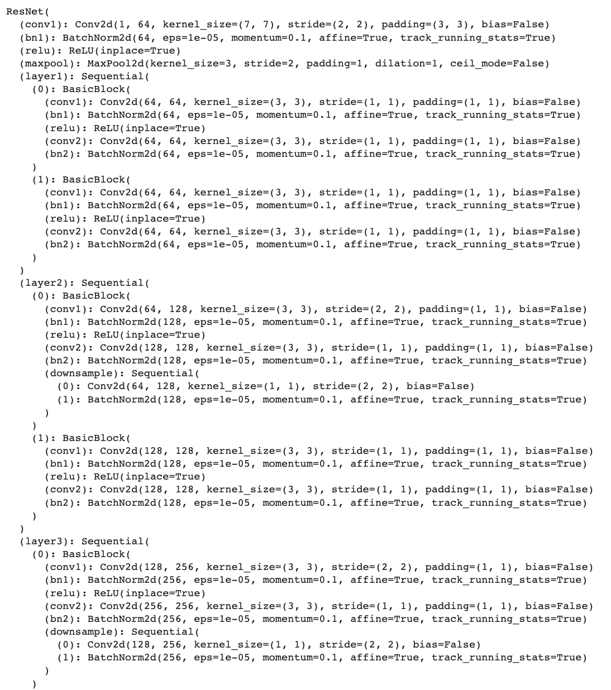

In this part we first create a custom dataloader to load the images and keypoints. For nose tip detection, we only need to return the nose tip keypoint. The images and read in as grayscale and normalized. Each image is resized to be 80x60. Below are some sampled images with their nose tip keypoints:
Next, we create a convolutional neural network and train our model. For loss, I used MSE and optimizer was Adam. I used a batch size of 1 and learning rate of 1e-3. I tried using smaller and larger learning rates and different number of epochs. The parameters did not improve the results, either giving similar results or worse results.

For the cases where the person is looking sideways the detections are bad, this is probably due to the data set being small and having a majority where the person is facing forward.
Using a smaller learning rate did improve the performance of my model.
Using a larger learning rate did improve the performance of my model.
In this part we create a custom dataloader again to load the images and keypoints. For full face detection, we will keep all of the 58 keypoints. The images and read in as grayscale and normalized. Each image is resized to be 160x120. This time, each image is also augmented. The augmentation I used was rotating each image and its keypoints about the center by a random degree between -10 and 10. Below are some sampled images with their nose tip keypoints:
Next, we create a convolutional neural network and train our model. For loss, I used MSE and optimizer was Adam. I used a batch size of 1 and learning rate of 1e-3.
Similar to the nose tip detection, images where the person is looking sideways yielded worse results, also likely do the dataset containing more images of persons facing the front.
Conv1
Conv2
Conv3
Conv4
Conv5
In this part we train a model on a larger dataset. Each image from the dataset is cropped based on the corresponding bounding boxes, which I scaled by a factor of 0.5 so that the majority of landmarks will remain inside the image after cropping. The keypoints are also adjusted to the crop. Each image is also resized to be 224x224 for training. I did not apply any augmentations to the images for this part because it seemed to slow my training down significantly. For the model, I used ResNet18, modified so that conv1 has input channel of 1 and fc has output channel of 136. I directly modified the model's layers and made no other changes. I used a batch size of 32, learning rate of 1e-3, and epoch of 15. I tried some other batch sizes and also adding an additional output layer (instead of directly modifying) but the results either yielded similar or worse MSE. The training took a while to run, but perhaps more epochs could have improved the results.
The flipped images had similar predicted landmarks, but the one on the right seems more accurate. Additionally from the other examples, it seems that the model tends to predict a face that is turned slighty to the left (from viewer perspective).
The model does not do very well with faces that are more turned to the side.
The two examples above both have predicted landmarks where the eyebrows and eyes are shifted down while the remaining landmarks seem reasonable. A reason why this may have happened is because both of these examples had very dark eyelid creases and dark shadows underneath the eye, which may have been mistaken as the eyebrows and eyes, respectively.
The model does better on the images where the face is facing front, and poorly on the image where the face is turned.
To create the heatmap for each landmark for the images, I used a 2D Gaussian of kernel size 19 and sigma 3, then place this 2D Gaussian in the map, centered at the ground truth coordinates.
For the model I used UNet, adding a layer right before with input channel 1, output channel 3 since I used grayscaled images for training. Additionally, I undo the sigmoid at the end of UNet with logit and add a softmax layer. I used the same optimizer (Adam) as the previous three parts but a BCE loss function instead, and a batch size of 32 and learning rate of 1e-3. I froze the pretrained model's weights at initialization.
Although the loss did decrease with each epoch, it was very slow. If I had more time I would try a larger learning rate.
The model does not do well at point prediction. Although most points are gathered around the face area, they are not really pinpointing any features. The accumulated heatmap of the example resembles a face shape rather than keypoints. Perhaps more epochs and/or a larger learning rate could improve the results.


As expected, the results on my own images are also very bad.
My Kaggle submission has MAE of 24.64081, my username is tracyx01.